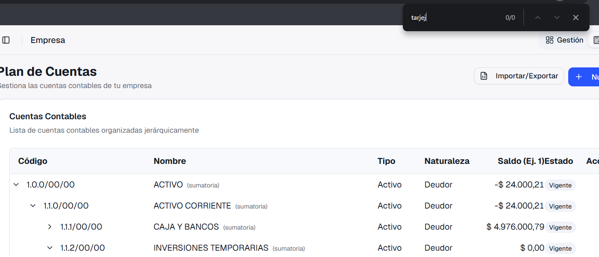
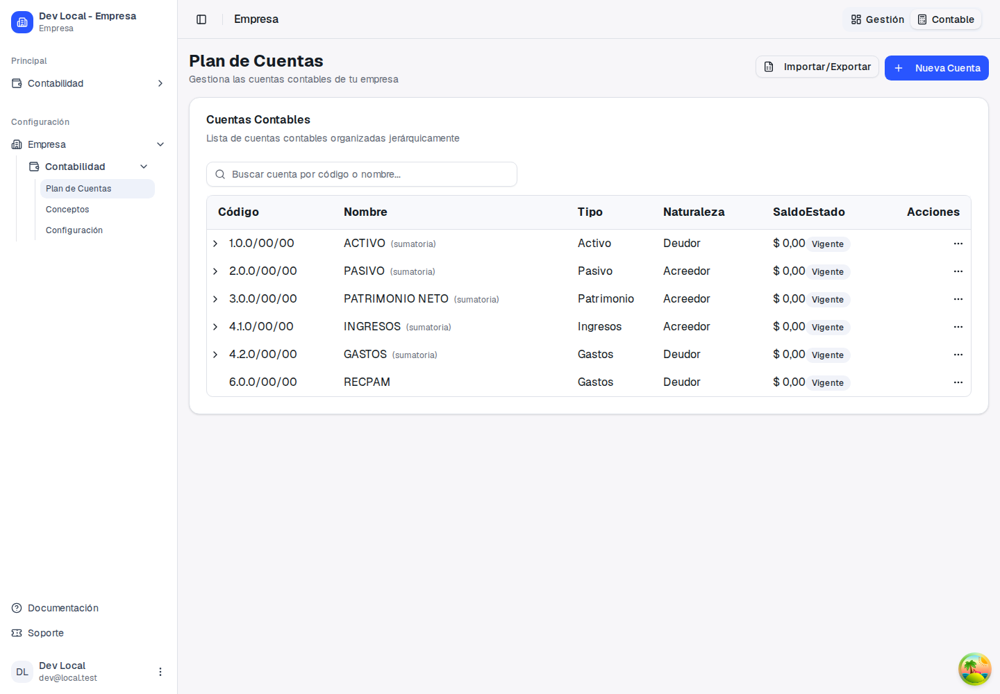
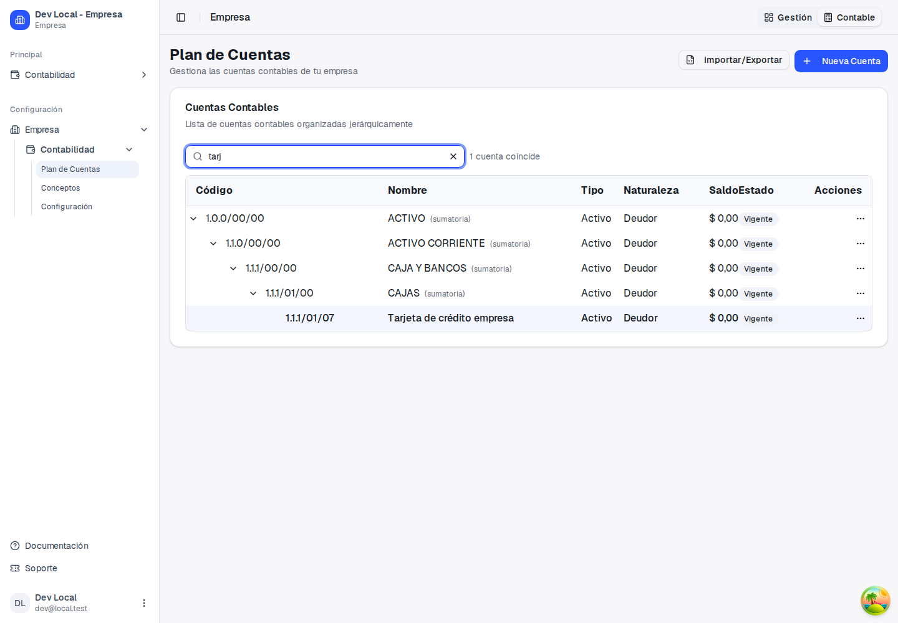
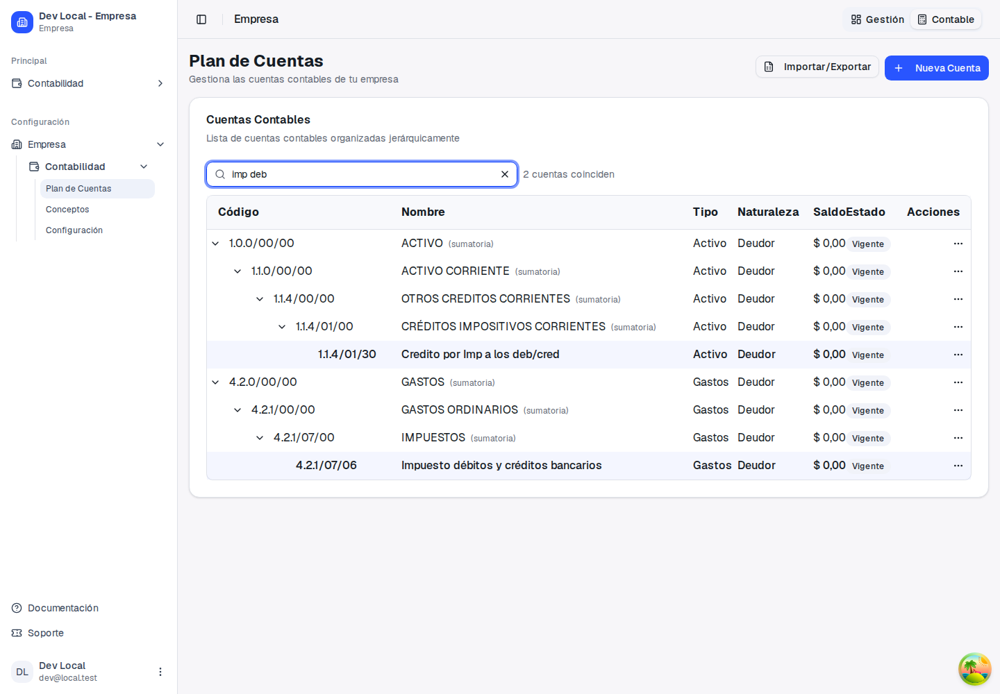

Guía de presentación: qué pasaba, qué cambió y cómo se usa
"Estaría bueno filtrar en el plan de cuentas porque no encuentro a ojo rápido lo que necesito cambiar." Elizabeth Perez · Contabilidad → Plan de cuentas
El plan de cuentas se muestra como un árbol: las cuentas que están dentro de una sumatoria cerrada no se dibujan en la pantalla. Por eso el buscador del navegador (Ctrl+F) no las encontraba: en la captura del ticket, «tarjej» da 0 resultados aunque la cuenta existe.

Para encontrar una cuenta había que abrir sumatoria por sumatoria hasta dar con ella.
Arriba de la tabla hay un buscador. Se escribe parte del código o del nombre y la tabla deja solo las cuentas que coinciden, con el camino de sumatorias abierto y la cuenta resaltada.


